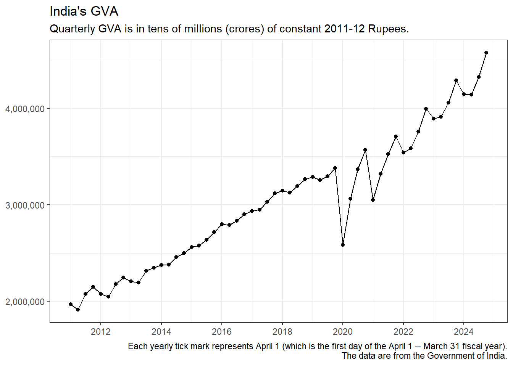

The Latest Quarter At A Glance
Data on India’s Gross Value Added for Quarter 4 of the 2024-25 fiscal year has just been published. Here are some highlights:
- Inflation-adjusted Gross Value Added was INR 4,576,023.82 crores at constant 2011-12 prices. (A crore is ten million or 107.)
- This represents a growth of 6.77 percent compared to the same quarter in the previous fiscal year. (The available quarterly data spans Quarter 1 of the 2011-12 fiscal year through Quarter 4 of the 2024-25 fiscal year. That’s roughly 13 years. Over this period, GVA has grown 5.98 percent annually.)
- Output of the primary sector (consisting of the Agriculture and Mining sectors) grew 5 percent. (Over the past 13 years, primary sector output has grown 4.01 percent annually.)
- Output of the secondary sector (consisting of the manufacturing sector, the electricity, gas, water supply and other utility services sector, and the construction sector) grew 6.79 percent. (Over the past 13 years, secondary sector output has grown 6.19 percent annually.)
- Output of the tertiary sector (consisting of the trade hotels transport communication broadcasting sector, the financial real estate professional services sector, and the public administration defence and other services sector) grew 7.34 percent. (Over the past 13 years, tertiary sector output has grown 6.62 percent annually.)
- Within the primary sector, output of the agriculture sector grew 5.37 percent. (Over the past 13 years, agriculture sector output has grown 4.22 percent annually.)
- Also within the primary sector, output of the mining sector grew 2.54 percent. (Over the past 13 years, mining sector output has grown 2.74 percent annually.)
- Summary: The latest quarter was better than usual. Total inflation-adjusted output (GVA) grew faster than its long-run average (that is, the average since Quarter 1 of the 2011-12 fiscal year). All three sectors – primary, secondary, and tertiary – grew slightly faster than their respective long-run average growth rates. Within the primary sector, agriculture grew more than a percentage point faster than its long-run rate.
Background
In this report, I am looking at the Indian economy from the supply (or production) side. The Indian government publishes data every quarter on the incomes generated by economic activity in the various sectors of the economy. As the total of these sectoral incomes is the Gross Value Added, it is useful to compare each sector’s income to the GVA.
GVA is related to Gross Domestic Product, the measure of aggregate economic activity that most people are familiar with, in the following way: GDP = GVA + Net Taxes = GVA + (Taxes - Subsidies). Over the last 50 quarters or so, Net Taxes, which is the difference between GDP and GVA, has varied between 4 percent and 12 percent of GDP.
The various sectors of the Indian economy are grouped into the Primary, Secondary, and Tertiary sectors. So, the incomes generated by these three sectors add up to GVA. The Primary sector consists of Agriculture, Livestock, Forestry and Fishing (Agriculture_plus from now on) and Mining and Quarrying (Mining_plus). The Secondary sector consists of Manufacturing, Construction, and Electricity, Gas, Water Supply and Other Utility Services (Electricity_plus). The Tertiary sector consists of Trade, Hotels, Transport, Communication and Services related to Broadcasting (Trade_plus), Financial, Real Estate and Professional Services (Financial_plus), and Public Administration, Defence and Other Services (Public_Admin_plus).
Gross Value Added, Level
Comment: Just eyeball the pre-pandemic and post-pandemic parts of the chart for a few seconds. Note the increased volatility after the pandemic, with sharp declines in the first quarter followed by equally sharp increases in the subsequent quarters. I wonder why this is so. Things seem to be returning to the pre-pandemic pattern (of mild increases). However, the question remains: Why has the first quarter (April – June) been so far below the pre-pandemic trend after the pandemic? Conversely, why has fourth quarter been so close to the pre-pandemic trend?
Gross Value Added, Growth Rate
The Components of GVA (Primary, Secondary, and Tertiary)
It is important to know which sector’s output contributes how much to total output (GVA) and its growth. Policy makers may be able to design better macroeconomic policies if they can spot the sector that is in trouble.
The charts below consist of three charts for each sector (or sub-sector).
- The first of the three charts for a particular sector shows the growth rate of that sector over the previous year (or four quarters).
- The second shows that sector’s share of total output (that is, the sector’s share of GVA).
- And the third shows the increase in the sector’s income over the previous year as a share of the increase in GVA.
Each chart shows the relevant values for each quarter as well as the relevant long-term average from 2011 onwards (shown with a dashed horizontal line).
Primary Sector
Importance: Income generated in the Primary sector was 17.02 percent of GVA in the latest quarter (Quarter 4 of the 2024-25 fiscal year). This can be compared with the Primary sector’s 18.5 percent share of GVA over the full data period (spanning Quarter 1 of the 2011-12 fiscal year through Quarter 4 of the 2024-25 fiscal year).
Comment: Note the seasonal pattern: highest share in the third quarter (Oct. – Dec.) followed by declining shares in the rest of the year.
Secondary Sector
Importance: Income generated in the Secondary sector was 30.46 percent of GVA in the latest quarter. This can be compared with the Secondary sector’s 28.37 percent share of GVA over the full data period.
Comment: The seasonal pattern is noticeable, though not as prominent as for the primary sector. In most years, the sector’s share is lowest in the third quarter. This could simply be the effect of the seasonal swings in the primary sector: When the primary sector’s share rises, the other sectors’ shares fall. After all, the shares must add up to 100%.
Tertiary Sector
Importance: Income generated in the Tertiary sector was 52.53 percent of GVA in the latest quarter. This can be compared with the Tertiary sector’s 53.13 percent share of GVA over the full data period.
Comment: Again, the seasonal pattern is noticeable. In most years, the sector’s share is lowest in the third quarter followed by increasing shares in the rest of the year. This could simply be the effect of the seasonal swings in the primary sector: When the primary sector’s share rises, the other sectors’ shares fall.
(It could be that the tertiary sector has an intrinsic seasonal pattern that affects the other two sectors. But that seems far fetched. It’s more likely that seasonal cycles in agriculture’s share of GVA drive the other sectors’ shares, in the opposite direction.)
A Closer Look at the Primary Sector
Agriculture, Forestry and Fishing
Importance: Income generated in the Agriculture_plus sector was 14.8 percent of GVA in the latest quarter. This can be compared with the Agriculture_plus sector’s 15.86 percent share of GVA over the full data period.
Recall that the corresponding shares for the Primary sector were 17.02 percent and 18.5 percent, respectively.
Comment: Note that the seasonal pattern in Agriculture, Forestry and Fishing is very similar to that in the Primary sector as a whole. This is not surprising because most of the Primary sector is Agriculture, Forestry and Fishing while Mining and Quarrying has a small residual share.
Note also that Agriculture, Forestry and Fishing is in a long-term relative decline.
Mining and Quarrying
Importance: Income generated in the Mining_plus sector was 2.21 percent of GVA in the latest quarter. This can be compared with the Mining_plus sector’s 2.63 percent share of GVA over the full data period.
Recall that the corresponding shares for the Primary sector were 17.02 percent and 18.5 percent, respectively.
Comment: Mining and Quarrying seems to have its own seasonal pattern, with peak shares, most often, in the fourth quarter. I wonder why this is so. Could it be a lagged effect of the seasonal pattern in agriculture where peak shares are most often in the third quarter?
Also, note that this sector is in a clear long-term relative decline.
A Closer Look at the Secondary Sector
Manufacturing
Importance: Income generated in the Manufacturing sector was 18.14 percent of GVA in the latest quarter. This can be compared with the Manufacturing sector’s 17.63 percent share of GVA over the full data period.
Recall that the corresponding shares for the Secondary sector were 30.46 percent and 28.37 percent, respectively.
Comment: Again, there is a seasonal pattern: the share of Manufacturing in overall output seems to hit its lowest in the third quarter, which is when agriculture usually hits its highest share.
Electricity, Gas, Water Supply and other Utility Services
Importance: Income generated in the Electricity_plus sector was 2.19 percent of GVA in the latest quarter. This can be compared with the Electricity_plus sector’s 2.28 percent share of GVA over the full data period.
Recall that the corresponding shares for the Secondary sector were 30.46 percent and 28.37 percent, respectively.
Comment: Electricity, Gas, Water Supply and other Utility Services seems to claim a high share in the first two quarters and slump in quarters three and four. It is tempting to think that agriculture, though well past its halcyon days, still drives the other sectors.
Construction
Importance: Income generated in the Construction sector was 10.13 percent of GVA in the latest quarter. This can be compared with the Construction sector’s 8.46 percent share of GVA over the full data period.
Recall that the corresponding shares for the Secondary sector were 30.46 percent and 28.37 percent, respectively.
Comment: It seems that a relative decline in Construction has been reversed after the pandemic.
A Closer Look at the Tertiary Sector
Trade, Hotels, Transport, Communication, and Broadcasting
Importance: Income generated in the Trade_plus sector was 19.81 percent of GVA in the latest quarter. This can be compared with the Trade_plus sector’s 18.57 percent share of GVA over the full data period.
Recall that the corresponding shares for the Tertiary sector were 52.53 percent and 53.13 percent, respectively.
Comment: Again, Trade, Hotels, Transport, Communication, and Broadcasting seem to hit peak share in the third quarter, in sync with agriculture.
Financial, Real Estate, and Professional Services
Importance: Income generated in the Financial_plus sector was 20.43 percent of GVA in the latest quarter. This can be compared with the Financial_plus sector’s 21.94 percent share of GVA over the full data period.
Recall that the corresponding shares for the Tertiary sector were 52.53 percent and 53.13 percent, respectively.
Comment: Financial, Real Estate, and Professional Services looks a lot like Electricity, Gas, Water Supply and other Utility Services. These two sectors seem to claim high shares in the first two quarters and slump in quarters three and four.
Public Administration, Defence, and Other Services
Importance: Income generated in the Public_Administration_plus sector was 12.29 percent of GVA in the latest quarter. This can be compared with the Public_Administration_plus sector’s 12.62 percent share of GVA over the full data period.
Recall that the corresponding shares for the Tertiary sector were 52.53 percent and 53.13 percent, respectively.
Comment: Public Administration, Defence, and Other Services hits peak shares in the second or third quarters. There is a clear seasonal pattern.